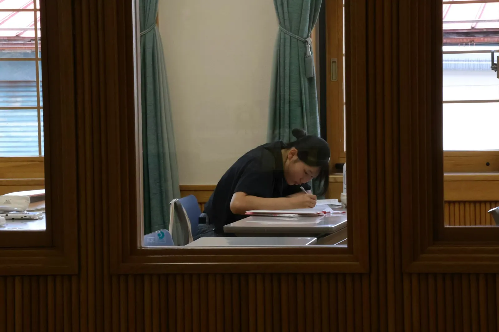
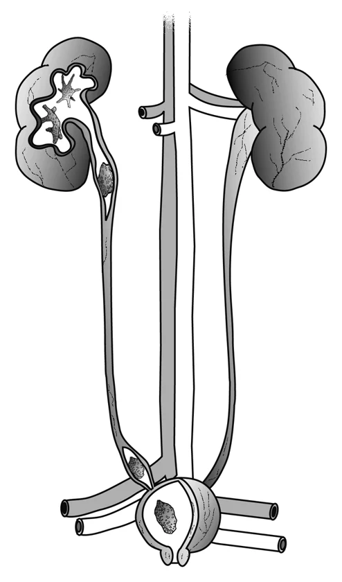
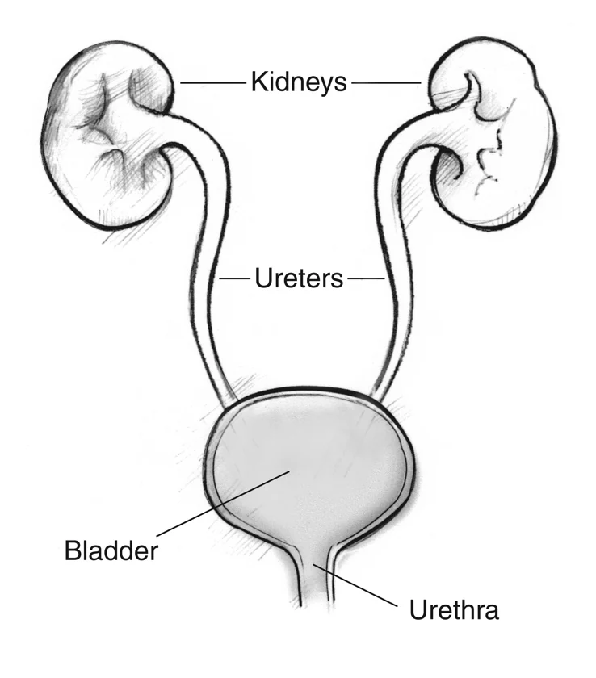

Deep focus
Concentrating on work or study pushes thirst out of mind for hours.
Why it matters
Water helps regulate body temperature, cushions joints and helps the body remove waste. How much you need varies with your age, activity and the weather.
of body weight is water, depending on age.
Popkin et al., 2010 [11]
average body mass lost during mild dehydration in two lab studies.
Ganio 2011 [1] · Armstrong 2012 [2]
of total water intake came from food among adults aged 19–30 in the reference survey.
National Academies, 2005 [14]
people in 23 countries behind BottleMate's goal model.
Yamada et al., Science 2022 [12]
Why it's easy to fall behind
Activity and warm weather can increase water loss. A busy routine can also make it easy to forget to refill your bottle.
Why a device like this
Most people guess how much they drink, and guesses are usually generous. Timer apps nag on a schedule, whether you drank or not. BottleMate weighs every sip, so reminders come only when you actually need them.
The benefits
What well-designed studies have found, in plain words. Numbers in brackets point to the sources at the bottom of the page.
Two small lab studies in young adults found more fatigue during mild dehydration. Effects on attention, concentration and headaches varied by study [1, 2].
Sports medicine guidance: losing more than about 2% of body weight as water reduces endurance performance and makes exercise feel harder, especially in the heat [10].
Two trials found fewer repeat kidney stones and bladder infections in specific adult groups. See the results and who took part below [3, 4].
Water helps lubricate and cushion your joints as you move [16].
In one trial, adults who drank more reported better headache-related quality of life. The number of days with at least moderate headache showed little change [5].
Sweat is how you cool down. Replacing it matters more on hot days, and dehydration and fluid overload are both linked to illness [10, 13].
And what BottleMate adds
The evidence
These trials followed specific groups of adults. The charts show what happened in each group during the study.
The trial followed 199 patients after their first calcium kidney stone for five years.

The year-long trial followed 140 premenopausal women with repeated bladder infections and low usual fluid intake.

Intake reference
These U.S. and Canadian reference values include plain water, other drinks and water from food. Individual needs vary with activity, heat and other factors.
With 25 g of fibre a day, raising fluids to 1.5–2 L increased bowel movements and cut laxative use more than fibre alone.
Anti et al., Hepatogastroenterology 1998 · PubMed [6]47% of people who drank more felt much better, against 25% in the control group, but headache days did not change much.
Spigt et al., Fam Pract 2012 · PubMed [5]In 3,615 adults, those drinking 0.5–1 L of water a day had 32% lower odds of developing high blood sugar than those drinking under 0.5 L.
Roussel et al., Diabetes Care 2011 · PubMed [7]Middle-aged adults with blood sodium above 142 mmol/l (a marker often linked to drinking too little) had a 39% higher risk of developing chronic diseases.
Dmitrieva et al., eBioMedicine 2023 · PubMed [8]Thirst weakens with age, and dehydration and fluid overload are both associated with illness and death, which makes regular drinking more important later in life.
Kenney 2001 · El-Sharkawy 2015 · PubMed [9, 13]In 631 people with stage 3 CKD, coaching to drink about 0.6 L more a day did not slow kidney function decline over a year.
Clark et al., JAMA 2018 · PubMed [15]Important: BottleMate is a wellness aid, not a medical device, and does not diagnose, treat or prevent any disease. If you have heart, kidney or liver disease, or your doctor has limited your fluids, follow their advice rather than an app's goal.
Let BottleMate do the counting, so you can get on with your day.
Read the studies and public health guidance behind this page.